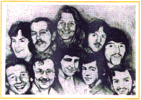
I am standing on the threshold of another trembling world. May God have mercy on my soul. My heart is very sore because I know that I have broken my poor mother's heart, and my home is struck with unbearable anxiety. But I have considered all the arguments and tried every means to avoid what has become the unavoidable: it has been forced upon me and my comrades by four-and-a-half years of stark inhumanity. I am a political prisoner. I am a political prisoner because I am a casualty of a perennial war that is being fought between the oppressed Irish people and an alien, oppressive, unwanted regime that refuses to withdraw from our land. I believe and stand by the God-given right of the Irish nation to sovereign independence, and the right of any Irishman or woman to assert this right in armed revolution. That is why I am incarcerated, naked and tortured. Foremost in my tortured mind is the thought that there can never be peace in Ireland until the foreign, oppressive British presence is removed, leaving all the Irish people as a unit to control their own affairs and determine their own destinies as a sovereign people, free in mind and body, separate and distinct physically, culturally and economically. I believe I am but another of those wretched Irishmen born of a risen generation with a deeply rooted and unquenchable desire for freedom. I am dying not just to attempt to end the barbarity of H-Block, or to gain the rightful recognition of a political prisoner, but primarily because what is lost in here is lost for the Republic and those wretched oppressed whom I am deeply proud to know as the 'risen people'.
Sunday 1st March 1981 - Bobby Sands - R.I.P
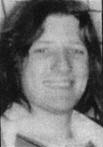 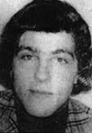
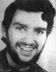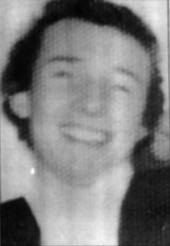
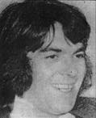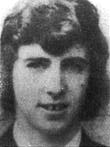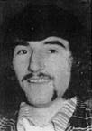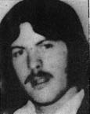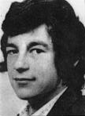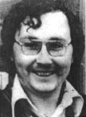
From top (left)
Bobby Sands, Died May 5th 1981, Francis Hughs, Died May 12th 1981
Patsy O Hara, Died May 21st 1981, Raymond Mc Creesh, Died May 21st 1981
Joe Mc Donnell, Died July 8th 1981, Martin Hurson, Died July 13th 1981
Kevin Lynch, Died August 1st 1981, Kieran Doherty, Died August 2nd 1981
Thomas Mc Elwee, Died August 8th 1981, Micky Devine, Died August 20th 1981
May they all rest in peace
Lá Pádraig inniú 's mar is gnách níor thárla aon rud suntasach, bhí mé ar aifreann agus mo chuid gruaige gearrtha agam níos gaire, agus é i bhfad níos fearr freisin. Sagart nach raibh ar mo aithne abhí ag rá ran aifreann. Bhí na giollaí ag tabhairt an bhia amach do chách abhí ag teacht ar ais ón aifreann. Rinneadh iarracht chun tabhairt pláta bidh domhsa. Cuireadh ós cómhair m'aghaidh ach shiúl mé ar mo shlí mar is nach raibh aon duine ann. Fuair mé cúpla nuachtán inniú agus mar shaghas malairt bhí an Nuacht na hEireann ann. Táim ag fáil pé an scéal atá le fáil óna buachaillí cibé ar bith. Choniac mé ceann dona dochtúirí ar maidun agus é gan béasaí. Cuireann sé tuirse ormsa. Bhí mo chuid meachain 57.50 kgs. Ní raibh aon ghearán agam. Bhí oifigcach isteach liom agus thug sé beagán íde béil domhsa. Arsa sé 'tchim go bhfuil tú ag léigheadh leabhar gairid. Rudmaith nach leabhar fada é mar ní chrlochnóidh tú é'. Sin an saghas daoine atá iontu. Ploid orthu. Is cuma liom. Lá fadálach ab ea é. Bhí mé ag smaoineamh inniú ar an chéalacán seo. Deireann daoine a lán faoin chorp ach ní chuireann muinín sa chorp ar bith. Measaim ceart go leor go bhfuil saghas troda. An dtús ní ghlacann leis an chorp an easpaidh bidh, is fulaingíonn sé ón chathú bith, is greithe airithe eile a bhíonn ag síorchlipeadh an choirp. Troideann an corp ar ais ceart go leor, ach deireadh an lae; téann achan rud ar ais chuig an phríomhrud, is é sin an mheabhair. Is é an mheabhair an rud is tábhachtaí. Mura bhfuil meabhair láidir agat chun cur in aghaidh le achan rud, ní mhairfidh. Ní bheadh aon sprid troda agat. Is ansin cen áit as a dtigeann an mheabhair cheart seo. B'fhéidir as an fhonn saoirse. Ní hé cinnte gurb é an áit as a dtigeann sé. Mura bhfuil siad in inmhe an fonn saoirse a scriosadh, ní bheadh siad in inmhe tú féin a bhriseadh. Ní bhrisfidh siad mé mar tá an fonn saoirse, agus saoirse mhuintir na hEireann i mo chroí. Tiocfaidh lá éigin nuair a bheidh an fonn saoirse seo le taispeáint ag daoine go léir na hEireann ansin tchífidh muid éirí na gealaí.
Tuesday March 17th 1981 - Bobby Sands - R.I.P